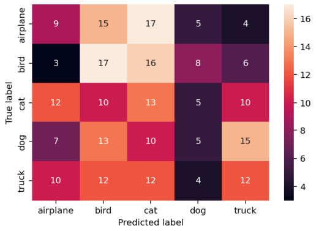

Evaluate a Convolutional Neural Network and Make Predictions (Classifications)
Last updated on 2026-06-14 | Edit this page
Estimated time: 31 minutes
Overview
Questions
- How do you use a trained CNN to make predictions?
- How do you convert model predictions into class labels?
- How do you evaluate model performance on a test dataset?
Objectives
- Use a trained CNN to make predictions on new data.
- Convert model outputs into predicted class labels.
- Evaluate model performance using accuracy.
- Interpret model performance using a confusion matrix.
Step 7. Perform a Prediction
Now that we have a trained model, we can use it to make predictions on new data.
We’ll use our test dataset, which contains images the model has not seen before.
Step 8. Measuring performance
Now that we have predictions, we can measure how well our model performs on the test dataset.
Accuracy
A simple way to evaluate our model is to calculate its accuracy — how often the predictions match the true labels. To do this, we also need the true labels from our test dataset.
We can do this using:
PYTHON
from sklearn.metrics import accuracy_score
test_labels = np.concatenate([y for x, y in test_ds], axis=0)
test_acc = accuracy_score(y_true=test_labels, y_pred=predicted_labels)
print('Accuracy:', round(test_acc,2))OUTPUT
Accuracy: 0.67Accuracy is the proportion of correct predictions.
For example, an accuracy of 0.67 means the model correctly classified 67% of the test images.
Confusion matrix
Accuracy gives us an overall score, but it doesn’t tell us which classes the model is getting right or wrong.
A confusion matrix helps us see this.
PYTHON
from sklearn.metrics import confusion_matrix
conf_matrix = confusion_matrix(y_true=test_labels, y_pred=predicted_labels)
print(conf_matrix)OUTPUT
[[ 9 15 17 5 4]
[ 3 17 16 8 6]
[12 10 13 5 10]
[ 7 13 10 5 15]
[10 12 12 4 12]]In a confusion matrix:
- rows represent the true labels
- columns represent the predicted labels
Values along the diagonal are correct predictions.
We can make this easier to read using a heatmap:
Darker values along the diagonal indicate correct predictions.
Off-diagonal values show where the model is confusing one class with another.

Inspect model performance
Look at the confusion matrix and answer:
- Does the model perform equally well across all classes?
- Which classes seem to be confused with each other?
- How does this compare to the accuracy value?
- The model performs better on some classes than others
- Some classes are frequently confused with similar ones
- Accuracy gives an overall score, but the confusion matrix shows where errors occur
What did we do?
In this episode, we used our trained CNN to make predictions on new data and evaluate how well it performs.
We:
- used the model to generate predictions
- converted those predictions into class labels
- measured performance using accuracy
- used a confusion matrix to better understand the results
We can now see not just how often the model is correct, but also where it is making mistakes.
In the next part of the workflow, we’ll look at ways to improve our model and make more accurate predictions.
- Use
Model.predict()to make predictions with a trained model. - Model outputs represent confidence values for each class.
- Use
argmaxto convert model outputs into predicted class labels. - Accuracy measures how often predictions are correct.
- Confusion matrices help identify which classes are predicted correctly and where errors occur.